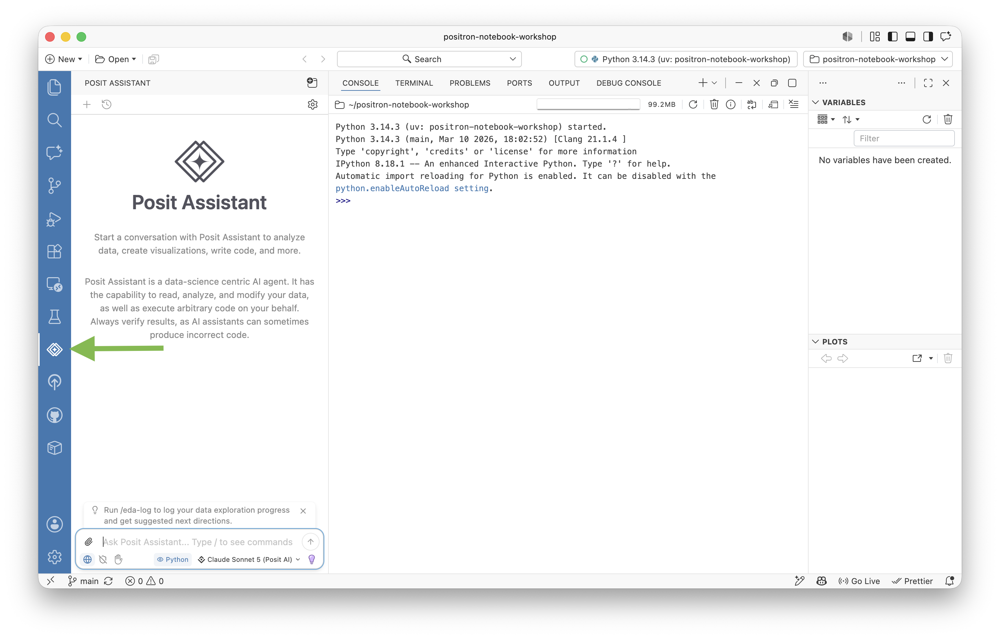
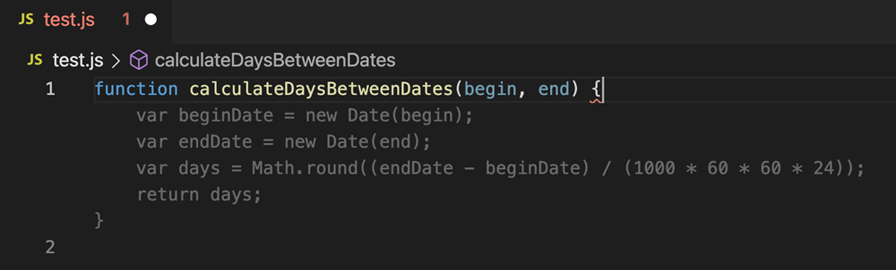
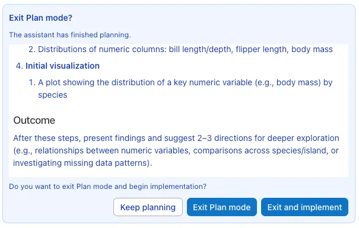
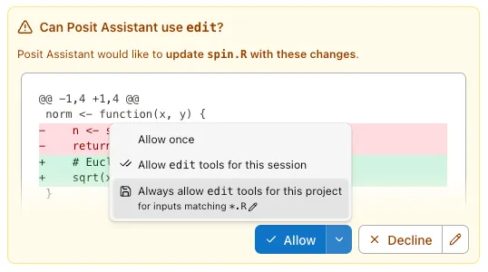

Structure of the active file, such as headings or functions
Jump to a report section
Timeline
History of the selected file, including Git commits and local saves when available
Compare an earlier version
Source Control
Changed and staged files in a Git repository
Review a diff and commit
Search
Matches across workspace files
Find every use of n_observed
Outline and Timeline are collapsed in this screenshot. Expand their headings. Choose Source Control or Search in the Activity Bar to switch sidebar views.
Positron can keep several independent R and Python sessions running. Use the interpreter picker to start or switch sessions.
Example
What it demonstrates
In R session A, run x <- 10
A now contains x
Start a fresh R session B and run exists("x")
B returns FALSE
Switch back to A and run x
A still returns 10
Before running a cell, check the selected session. Variables and Plots follow the active interpreter. Sessions can use different R versions or libraries.
Understand: how an LLM and a coding application work together.
Set up: choose a provider, mode, and permitted tools.
Work: try completion, then make explicit requests using SBP.
Verify: inspect the code, check the statistics, and disclose assistance.
1. Understand: the LLM and the application
The AI model is usually a large language model (LLM), sometimes with image capabilities. It uses supplied context to generate responses, code, or tool requests.
The coding application lets you interact with the LLM. It gathers context, sends requests, displays responses, and can use tools to act on those responses.
R executes the R code. The LLM can propose a calculation without actually running it.
The same LLM can behave differently in applications with different context, tools, and permissions.
Identify the application, provider, and R interpreter.
Connect the provider and find the assistant panel.
Choose whether to discuss, plan, or implement.
Check tool permissions before editing or execution.
Copilot is our example provider. Other AI tools are permitted, and the lab has an AI-free route.
The names you will see
Name
Role in today’s demonstration
Positron
The workspace containing your editor, Console, and panels
R
Runs the R code and calculates the result
GitHub Copilot
Our example AI service, including inline suggestions
Posit Assistant
The panel where we discuss code and request agent work
A provider supplies access to AI models. Posit Assistant can connect to different providers, including GitHub Copilot.
GitHub Copilot: our worked example
GitHub Copilot is GitHub’s AI coding assistant.
It can suggest code, answer questions, and help revise existing code.
It works in supported editors and other GitHub workflows.
In Positron, we will use its inline code suggestions.
Access requires a GitHub account with Copilot enabled.
Copilot is one example. Other AI tools may be used under the same course rules. No AI tool is required for the lab.
An AI chat interface inside Positron

Posit Assistant is Posit’s chat interface. It connects to a provider you select. GitHub Copilot is one available provider, with its own coding features.
In Posit Assistant, choose the kind of work before sending the request.
Workflow
Purpose
What it may do
Ask (/ask)
Explain or inspect
Read/search files and inspect session output; cannot edit or run R/Python
Plan (/plan)
Develop an approach for review
Read context and write a plan; instructed to defer implementation
Regular agent work
Implement a requested change
Edit and execute, subject to permissions
Use /normal to leave Ask mode. After reviewing a plan, Exit and implement starts the work. A small, clear change can go directly to regular agent work.
Agent approvals: when will it ask you?
Ask / Plan describes the workflow. Approval settings control tool actions.
Approval setting
What happens
Normal
Routine actions may run; riskier actions prompt
Restricted
Each tool action requires confirmation
Auto
An automated reviewer allows or blocks actions
YOLO
Broad automatic approval, with some safeguards remaining
For our demonstration, use Normal and inspect each proposed change. Allow once approves one action; session/project approval covers future actions too.
3. Work through the SBP example
Start with predictions, then make increasingly broad requests.
Completion and next-edit suggestions: inspect the application’s predictions.
Level 1: revise existing code.
Level 2: write specified code.
Level 3: implement an analysis plan.
Level 4: develop an analysis plan from a question.
At every step: provide context, inspect the response or edits, run when appropriate, and check the result.
Familiar data: SBP at three visits
Copy sbp-demo.R and sbp-demo.csv to work/session09/.
Column
Meaning
id
Patient identifier, one row per patient
arm
Placebo or Treatment
sbp_0
Baseline systolic blood pressure, mmHg
sbp_6, sbp_12
SBP at 6 and 12 weeks, mmHg
These are the same 60 synthetic patients from Session 4, using only the columns needed here. Three week-12 values are missing.
Inline completion: AI predicts code as you type

Gray text is a proposal based on the nearby code and comments.
Tab accepts it. Esc dismisses it.
Accepting inserts source text. Run the code yourself and check its result.
Microsoft screenshot. JavaScript in VS Code illustrates ghost text. Our next example uses R in Positron.
Inline example: you start typing write.csv
Suppose your script has a data frame named trial and nearby output paths.
For an explanation: attach the code in Ask mode and ask why sourcing it shows no plot. Read the proposed fix and apply it yourself.
For an edit: request “Add arm colors and print the plot. Keep the variables unchanged.” In a workflow with editing tools, inspect the resulting code differences.
Both are level-1 requests. The difference is whether you want an answer or a change applied to the file.
Level 1: inspect the proposed change
p <-ggplot(trial, aes(sbp_0, sbp_12, color = arm)) +geom_point()print(p)
print(p) displays the plot object when the script runs.
color = arm inside aes() maps treatment arm to colors.
Each point represents one patient’s baseline and week-12 SBP.
Three patients lack week-12 SBP. Account for their omitted points.
Check the explanation, the code change, and the result.
Level 2: write code for a specified task
Using trial, make a scatterplot with baseline SBP on x and week-12 SBP on y. Color points by arm. Label both axes in mmHg and display the plot.
You have chosen the variables, plot type, grouping, and labels.
AI supplies the implementation. Chat can return code for you to run. An agent can write and run the script if asked.
Check that x is baseline, y is week 12, and each point represents one patient.
From a specified plot to an analysis plan
Level 2 supplies one task: draw the baseline-versus-week-12 scatterplot.
Level 3 supplies a connected plan:
Inspect patient IDs, variable types, visit columns, and missing values.
Summarize observed SBP by visit and arm, reporting the count with each mean.
Make the baseline-versus-week-12 scatterplot, colored by arm.
Save the summary and plot, then verify counts and labels.
AI works out how to implement this plan in these data.
Level 3: implement the supplied analysis plan
Implement the plan on the previous slide using work/session09/sbp-demo.csv. Inspect the data first. Use available SBP values for each visit-and-arm mean and report its count. Use complete baseline/week-12 pairs for the scatterplot.
Save an R script, summary CSV, and plot PNG under work/session09/. Run the script and check the outputs. Keep the source CSV unchanged. Raise any issue that would require changing the plan.
You supply the analytical approach. AI handles the connected implementation and reports evidence.
Agent screenshot: review the plan

Read the proposed steps and expected output.
Keep planning lets you revise the approach.
Exit and implement starts work on the plan.
For our plot task, the plan should name the input CSV, visit summaries, missing-value handling, and output files.
Posit Plan mode screenshot. The pictured plan uses penguin data. Our exercise uses the Session 4 SBP data.
Agent screenshot: inspect a proposed edit

Check the file name and the red/green changes.
Allow once approves the displayed action.
Broader options allow more future edits without asking again.
Decline an unrelated change and explain what to revise.
Prompts depend on the tool’s permission settings. Review the final diff too.
Prepared R reference output. Check the axes, arm legend, and 57 complete pairs. The three patients missing week 12 still contribute to earlier visit summaries.
Level 4: develop a plan from a question
Research question: “How does SBP change over the three visits, and how does that pattern differ by treatment arm?”
Inspect the dataset and propose an analysis plan for this question. Explain the summaries and plots you would use, how you would account for repeated measurements and missing values, and what the results could tell us. Present the plan before implementing it.
Here, AI helps choose what analysis to do and why.
After review, carrying out that plan becomes the level-3 workflow.
Level 3 versus level 4: what is already decided?
3. Implement an analysis plan
4. Develop an analysis plan
Starting point
Agreed steps plus data
Research question plus data
AI decides
How to implement the steps correctly
Which approach addresses the question and why
Data exploration
Checks structure and informs coding
Informs the proposed analytical approach
Your review
Code, outputs, and fidelity to the plan
Reasoning and assumptions, then implementation
A mode named “Plan” can help at either level. These levels describe the request, not a product setting.
Level 4: review the proposed reasoning
A useful SBP plan should explain:
Whether it describes visit means, within-patient change, or both.
Why the chosen plots answer the question about change and arm differences.
How it preserves patient pairing across visits and handles missing SBP.
Whether descriptive summaries suffice or an inferential method is needed.
Visit means can involve different patients. A difference in visit means need not equal the mean paired change.
An agent can implement a reviewed plan. Successful execution does not validate its scientific reasoning.
Checkpoint: prediction, request, or plan?
You type write.csv( and AI suggests the remaining arguments.
“Why does sourcing my plot script show no figure?”
“Write a baseline-versus-week-12 scatterplot, colored by arm.”
“Implement these visit summaries and plot steps, then check the outputs.”
“How does SBP change by arm? Propose an analysis plan.”
Which is inline prediction? Which requests are levels 1–4?
Discuss: could chat help develop the plan even if it cannot execute R?
4. Verify the work and its statistical meaning
Keep the same SBP data and inspect a plausible mistake.
The request: report the number of patients, observed week-12 SBP values, mean SBP, and SD by arm.
The trap: filtering missing SBP before counting changes the denominator.
We will predict the error, repair the code, check independently, and document the assistance.
Evaluating an AI coding workflow
Ask
Look for
What did it know?
The code, data, instructions, and context supplied
What did it do?
Suggested text, applied edits, or executed commands
What evidence supports the result?
Code differences, execution output, figures, and checks
Does it answer our question?
Correct quantities, pairing, missing-data handling, and interpretation
A successful run supports a claim about execution. Statistical validity requires additional reasoning.
Apply these questions to the week-12 SBP summary on the next slides.
Vague instructions invite hidden choices
Vague:
# Summarize SBP by arm.
Specific:
# Using trial, report total n, observed n, mean and SD# of week-12 SBP by arm. Keep missing values when# counting total n; omit them for the mean and SD.
These instructions can guide a completion or an explicit request. They specify the quantity you will verify.
Compare these counts with the candidate’s output. Use a check whose logic you can explain independently.
Other common failures
joining without checking duplicate keys;
silently removing missing observations;
using an unexpected denominator;
inventing a function or argument;
changing a working style more broadly than requested;
producing a plot whose labels do not match its calculation.
Good first uses are small and checkable
complete a familiar function call;
draft repetitive column names or plotting labels;
translate one already-understood base-R operation to dplyr;
propose a test case for an existing function;
explain an error message using synthetic context.
Avoid beginning with a full analysis whose answer you cannot independently describe.
Context creates a privacy boundary
AI completion can use surrounding code and open-file context. Never expose:
protected health information or identifiable records;
restricted or confidential research data;
passwords, tokens, private keys, or .Renviron;
unpublished confidential material not approved for the service.
Use only synthetic course data in this session.
A quick privacy classification
Would you place each item in an AI-visible editor?
Synthetic patient IDs created for this course
A real medical-record number
A public package example
An unpublished collaborator dataset
A token copied from .Renviron
Course policy after today
AI coding assistance is allowed for homework and labs unless designated unaided.
Copilot is our example; the same rules apply to other AI tools.
Students remain responsible for every submitted line.
Important results and data decisions must be verified.
Substantive assistance must be disclosed.
AI assistance is not permitted on any examination.
Keep disclosure short and useful
AI use: I used Posit Assistant with GitHub Copilot as provider to revise the
summary. I reviewed its missing-value handling and checked counts with base R.
Or:
AI use: None.
One workflow to carry into your own projects
Specify: state the goal, relevant context, and intended scope.
Choose: prediction, discussion, directed editing, or agent execution.
Inspect: read the response, proposed plan, and code differences.
Execute: run the saved code in the intended environment.
Verify: check data use, statistical meaning, and reproducibility.
Record: preserve the reviewed source and disclose substantive assistance.
The amount of work delegated can change. Your responsibility for the result remains.
Exit check
What does the application do that the LLM does not do by itself?
How does inline completion differ from an explicit editing request?
What distinguishes implementing a plan from developing one?
Why did the first SBP summary report 28 and 29 instead of 30 and 30?
What evidence and disclosure would you keep?
Beyond one prompt: extensions (reference)
Concept
What it adds
Project instructions
Persistent guidance about the project and its conventions
Skills
Reusable instructions and resources for a particular kind of task
MCP connections
A standard way to connect supported applications to external tools or data
Subagents
Separate agent workers handling subtasks and returning results
These extend an assistant’s workflow. They do not establish that its output is correct.